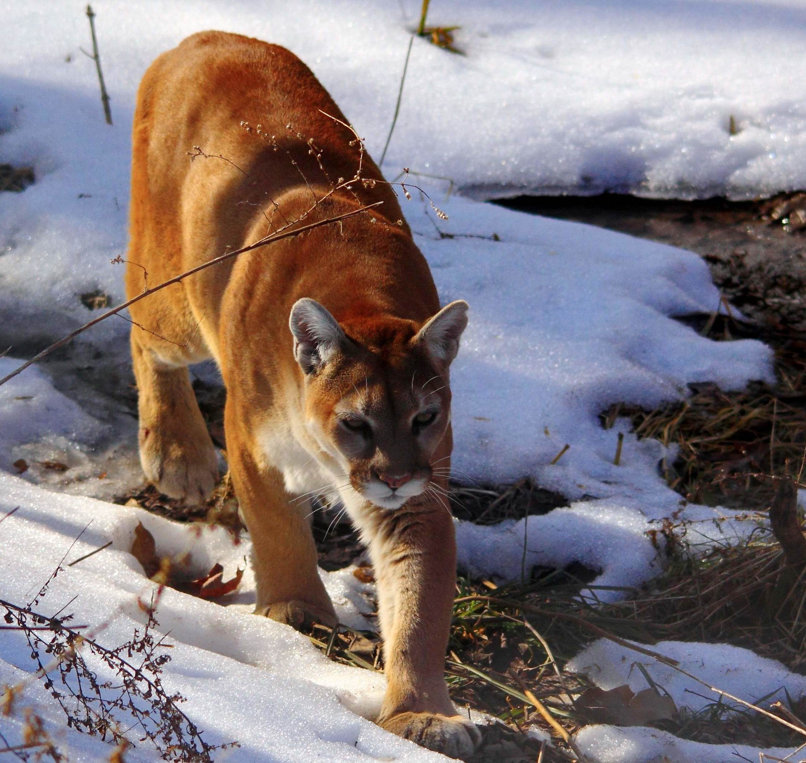

Tato vysoce přizpůsobivá šelma žije na rozsáhlém území Ameriky, od kanadského Yukonu po nejjižnější část And v Jižní Americe. Upřednostňuje hustě zarostlé biotopy, ale poradit si dokáže i v otevřené a suché krajině. Pohybovat se může v nadmořské výšce až 5 800 m.
Puma americká (Puma concolor) je druhá největší kočkovitá šelma Ameriky (po jaguárovi) a největší zástupce malých koček. Obvykle váží 21 až 80 kg, ale velmi statní jedinci i více než 100 kg. Na délku typicky měří 150 až 250 cm, výjimečně až 290 cm. Vyznačuje se šedou, béžovou, hnědou až červenou barvou srsti, mohutnými končetinami a relativně malou hlavou.